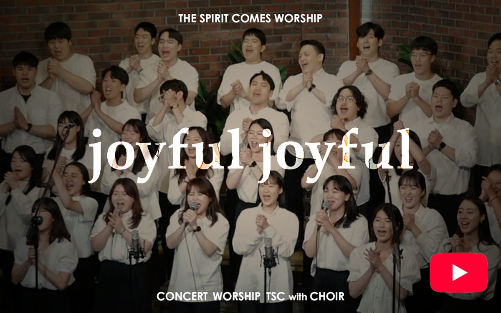
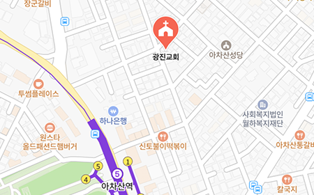

광진교회
대한예수교장로회
청년회 인스타그램
청년회 공식 인스타그램
@gj_youth_group
광진교회 성가대
중고등부와 교사로 구성된 찬양팀
@gj_youth_group

TSCW
THE SPIRIT COMES WORSHIP은 사도행전 1장 8절의 말씀대로, 성령을 받아 그리스도의 증인이 된 예배자들의 모임입니다.
@tscw2424

찾아오시는 길
서울시 광진구 자양로 45길 62
대한예수교장로회
청년회 공식 인스타그램
@gj_youth_group
중고등부와 교사로 구성된 찬양팀
@gj_youth_group

THE SPIRIT COMES WORSHIP은 사도행전 1장 8절의 말씀대로, 성령을 받아 그리스도의 증인이 된 예배자들의 모임입니다.
@tscw2424

서울시 광진구 자양로 45길 62